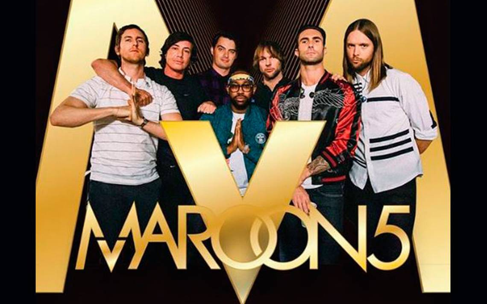

Biografia
El grupo estadounidense de pop rock Maroon 5 se formó en 2001 en Los Ángeles, cuando el grupo denominado Kara's Flowers, formado en 1994 por Adam Levine, Jesse Carmichael, Mickey Madden y Ryan Dusick decide reconvertirse tras publicar un álbum que no tuvo demasiado éxito. Tras madurar en la universidad y hacer unos ajustes en la formación, deciden fichar por un sello independiente que les ofrece libertad creativa y publican en 2002 su primer álbum como Maroon 5.
Inicios
El grupo se formó originalmente entre 1994 y 1995 como “Kara's Flowers”, mientras sus integrantes cursaban la secundaria. Adam Levine, Jesse Carmichael, Mickey Madden y Ryan Dusick firmaron con la disquera Reprise Records y con ellos publicaron el álbum, The Fourth World, en 1997. Después de una respuesta indiferente al álbum, la banda se separó de su sello discográfico y siguieron con sus carreras académicas en la universidad.
"Nos quedamos pensando, Ok, ¿qué hacemos?" dijo Adam Levine en una entrevista. "Así que nos fuimos a la universidad". Dusick y Madden ingresaron a UCLA, Levine y Carmichael empezaron a trabajar en el Plan B, Maroon 5 en los dormitorios en la Universidad del Estado de Nueva York.
"En los pasillos se oía música Góspel y las personas escuchaban cosas que nosotros nunca habíamos oído, como Biggie Smalls, Missy Elliot y Jay-Z. El disco de Aaliyah acababa de salir a la venta, y estábamos extasiados. En ese tiempo también conocí el trabajo de Stevie Wonder y me inspiré más", mencionó Levine.
"Empezé a cantar diferente," le dijo a VH1, "y Jesse empezó a tocar los teclados; eso fue lo que cambió todo". En 2001, la banda se reagrupó, añadió a James Valentine a la agrupación y cambió el nombre a Maroon 5.